首页 > 编程笔记
PCB是什么
PCB 是三个英文单词 Printed（印刷的）、Circuit（电路）、Board（板）的头字母，中文称为印制电路板或者印刷电路板，如图 1 所示。
那么问题来了，为什么把电路印制在一个平面板子上呢？
看图 2 中左侧的部分，是不是很头大？不仅杂乱无章而且元器件之间的电气连接非常不可靠。如果将所有的元器件都“绑”在一个平面上（实际上是由多层构成），而通过这个平面上的走线将要电气连接的引脚互相连起来，可靠性会大大增加，成本大大降低，它们之间的连接关系也非常有条理，这就是 PCB 的功能。
可见 PCB 的主要功能就是为了帮助各种形状、封装的元器件能够方便地进行电气连接，PCB 的设计目标如下：
从这个图中可以看到构成PCB的一些主要元素。
PCB 承载的主体就是各种元器件，元器件的种类繁多，其“体貌”（在 PCB 上的封装）也千差万别，甚至同一个型号的元器件有多种不同的封装形式，例如一个 14 引脚的运算放大器 LM324 会有 DIP14、SO-14、SSOP14 等封装形式。
根据封装类型可以将器件简单分为两个大类。
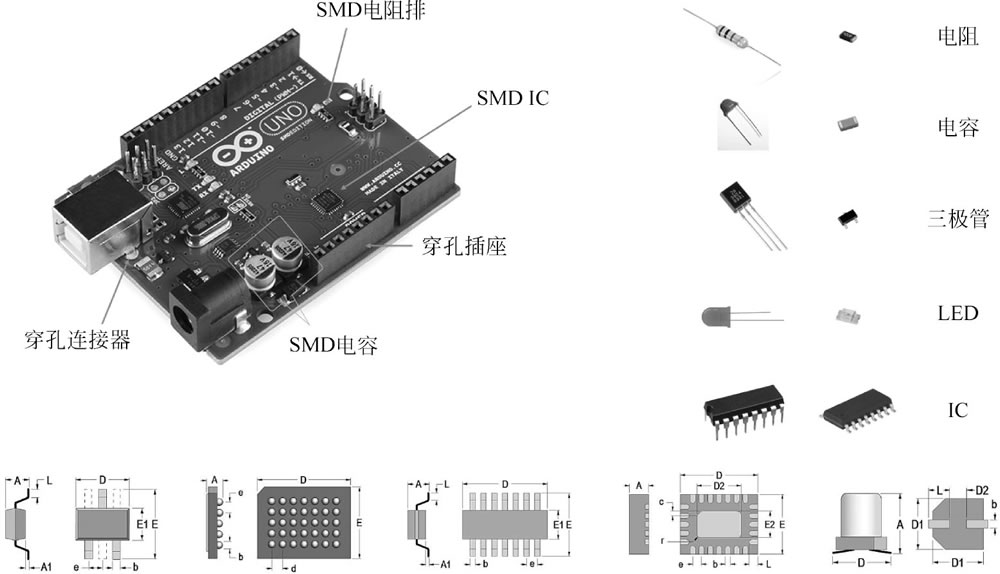
图 4 PCB上不同封装的元器件
大家要注意区分与表面贴装器件相关的两个英文术语：
取决于器件的封装类型，它有贯穿上、下层的通孔（Through Hole）焊盘，也有只在顶层或底层的表面贴装（Surface Mount）焊盘，如图 5 所示。
有的器件这两种焊盘都有。它们的形状和尺寸也是多样的，在用 CAD 工具构建元器件封装的时候，要根据该器件的数据手册中的定义来正确设定，在使用工具自带的封装或从网上下载封装的时候，一定要仔细检查，确保焊盘的大小满足器件手册里的规格要求。
单面板和双面板的构成如图 6 所示。
取决于信号的性质以及板卡上走线空间的限制，其宽窄也有所不同，例如承载大电流的走线要尽可能短而粗；成对传输信号的差分线要尽可能等长度；高速的数字信号连线其传输阻抗尽可能匹配发送器件的输出阻抗以及接收器件的输入阻抗等。
图 7 为国外一工程师设计的集高速数字电路、电源管理、射频电路于一体的收发模块 STRF，从这个板子的 3D 视图可以看出，不同信号走线的差异，包括数字信号走线（包括连接 USB 的差分对走线）、射频信号走线、供电走线都做了特别的处理。
根据连接信号层的设置，过孔主要分为如下三种方式，如图 8 所示。
过孔的形状和尺寸也不是随便设置的，它取决于连接信号的特性以及PCB加工厂的工艺要求。
图 9 是我们的 DDS 任意波形发生器学习板的 3D 视图，其中用白色字符标注的元器件的编号、“DDS AWG Training Board”“STEP FPGA”文字串乃至二维码都是在丝印层上的信息。
用不同颜色的阻焊层也就得到不同颜色的板子，例如图 10 中同一个板子在加工的时候选择不同的阻焊层颜色，也就得到不同颜色的板子。
很多公司或团队特意将某一系列的板子采用某一种颜色以彰显其风格，例如 Spark Fun 的板子基本都是红色。即使是同一块板的两侧也可能使用不同颜色的阻焊方式，如 Arduino Uno 板的正面是绿色的，而背面则有一部分是白色的。
在加工快板的时候选用不同的阻焊颜色，价格和交期可能都会不同，绿色是最通用的、最快捷的，在你提交 Gerber 文件选择加工选项的时候要注意。
这些孔的作用有的是用来同其他板卡进行物理层叠连接固定用的，对于研发中的原型产品，即使没有其他板卡相连接，也会在四个角上打上孔，以方便调试。在不妨碍其他电气连接的前提下，四个孔可以同板上的“地”连接，调试过程中示波器探头以及其接地夹子同板上“地”的连接比较可靠，不需要再焊接接地的测试点，当然高速电路的接地点一定要靠近被测的信号。
另外在调试的时候，在四个定位孔上安装塑料或金属的螺钉，能够起到支撑的作用，放在实验台上同台面保持一定的距离，以避免台面上的导线、元器件造成板子上的信号短路。
用于同主板连接的定位孔如图 11 所示。
PCB 焊接所需要的主要工具如图 13 所示：
上面的图列举了一些最基本的工具，相信大家一看就知道这些工具的用途，在此不再赘述。只有右下角的热风枪、回流炉等对有些工程师来讲可能接触得少一些，但随着芯片集成度越来越高、封装日趋小型化，QFP、QFN、BGA 封装的器件被大量使用，这两个设备也逐渐成了实验室的必备工具。
除了上述的工具外，我们还需要知道将哪些器件焊接到什么位置上，因此还需要与该 PCB 相关的设计文件，细心的读者会看到 PCB 上的器件通常只标记了参考编号（例如 R1、C10 等），究竟这些参考编号代表的元器件的值是多少？是什么型号？在拿到的 PCB 上是没有相应的信息的，这是因为 PCB 上的空间有限，只能将参考编号信息印制上去（丝印），更高密度的板子连器件的参考编号也没有空间印制上去，要准确知道这些器件的型号或值，一般需要以下两种文件中的一个。
1) 原理图（Schematic）
如图 14 所示，参阅原理图不仅可以定位PCB上每个器件的具体信息，在逐级调试的过程中，还可以根据原理图决定元器件焊接和调试的先后次序。
2) 物料（BOM）清单
BOM 清单如图 15 所示，BOM 文件在 PCB 上安装元器件以及调试的时候辨别元器件时比较常用，从BOM文件中可以看出某一种值的元器件的数量，这样可以更方便地决定每种器件的数量。
PCB 的丝印图，如图 16 所示。
KiCad 通过插件可以生成格式为 HTML 的交互式 BOM 文件，可以在浏览器中打开，非常便捷地定位 PCB 上每一个元器件的位置、方向、编号、值等。
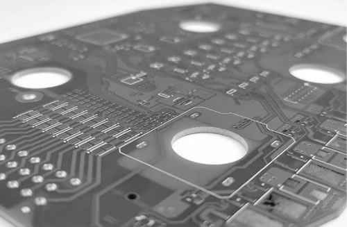
图 1 还没有安装元器件的印制电路板
图 1 还没有安装元器件的印制电路板
那么问题来了，为什么把电路印制在一个平面板子上呢？
看图 2 中左侧的部分，是不是很头大？不仅杂乱无章而且元器件之间的电气连接非常不可靠。如果将所有的元器件都“绑”在一个平面上（实际上是由多层构成），而通过这个平面上的走线将要电气连接的引脚互相连起来，可靠性会大大增加，成本大大降低，它们之间的连接关系也非常有条理，这就是 PCB 的功能。
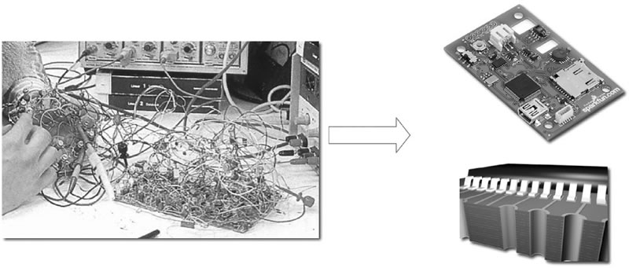
图 2 PCB的功能：将不同的元器件放置在上面，并能够将这些元器件进行电气连接
图 2 PCB的功能：将不同的元器件放置在上面，并能够将这些元器件进行电气连接
可见 PCB 的主要功能就是为了帮助各种形状、封装的元器件能够方便地进行电气连接，PCB 的设计目标如下：
- 将各种封装的元器件适当地固定在电路板上，并能够将这些器件的每个引脚的信号（通过焊盘 Pad）连接起来；
- 在将各个器件的引脚进行连接的时候，一定要满足所需要的电气性能，达到电路设计的技术指标，电路板本身尽可能不对板上的电信号带来连接错误、噪声、失真等；
- 同时要满足各种机械、加工、散热、电磁干扰等方面的要求。
PCB上有什么
我们先看一个还没有焊接元器件的，基于 FPGA 的扩展训练板的 PCB 版图，如图 3 所示。
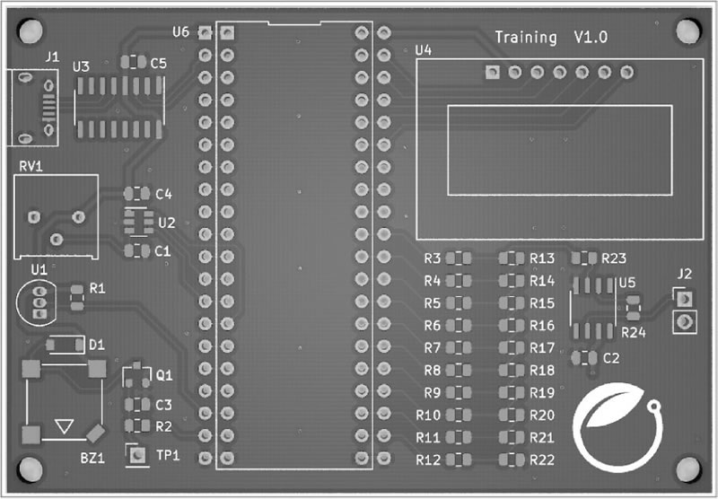
图 3 一个PCB的主要构成
图 3 一个PCB的主要构成
从这个图中可以看到构成PCB的一些主要元素。
1) 器件
器件（Part）指焊接在 PCB 上的元器件，以焊盘+丝印的方式出现在板子上。PCB 承载的主体就是各种元器件，元器件的种类繁多，其“体貌”（在 PCB 上的封装）也千差万别，甚至同一个型号的元器件有多种不同的封装形式，例如一个 14 引脚的运算放大器 LM324 会有 DIP14、SO-14、SSOP14 等封装形式。
根据封装类型可以将器件简单分为两个大类。
- 通孔（Through hole）器件：需要在电路板上打孔将引脚固定住，元器件的引脚跨越顶层（Top layer或Front layer）和底层（Bottom Layer或Back layer）两个层。
- 表面贴装（Surface mount）器件：元器件只出现在一个层上，可放置在顶层，也可以放置在底层，但一个器件只在其中的一个层上。随着产品的系统运行速度越来越快、器件的集成度越来越高，表面贴装器件（SMD）也成为了主流，因为其体积小巧、便宜，高频特性好，电路板加工生产比较容易，电路板的密度可以更高。PCB上不同封装的元器件如图 4 所示。
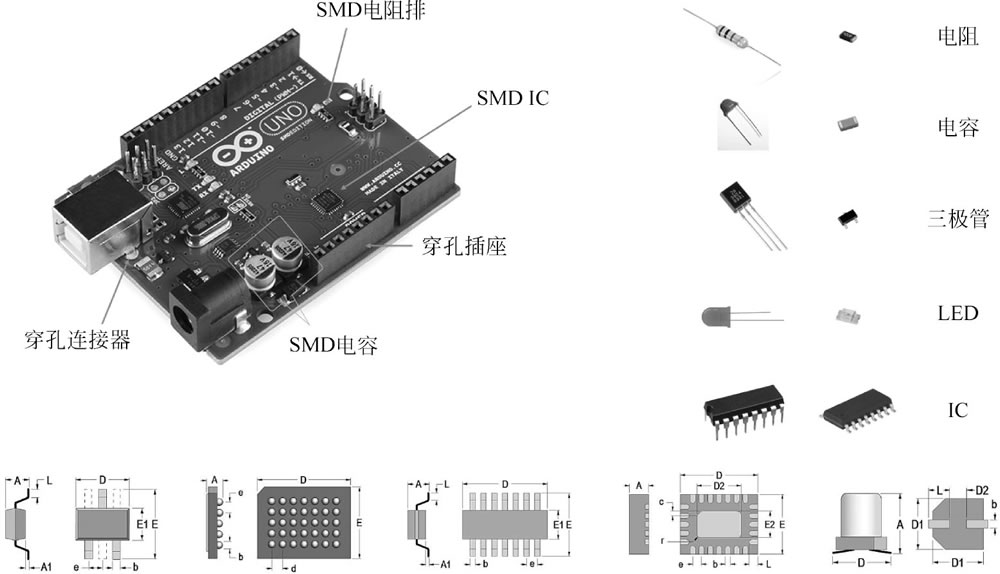
图 4 PCB上不同封装的元器件
大家要注意区分与表面贴装器件相关的两个英文术语：
- SMT（Surface Mount Technology），表面贴装技术或表面贴装工艺，简称“表面贴装”。
- SMD（Surface Mount Device），翻译过来叫表面贴装元器件。
2) 焊盘
器件的引脚（Pin）通过焊盘固定在电路板上，并同其他焊盘进行电气连接。焊盘（Pad）是器件封装的重要组成部分。取决于器件的封装类型，它有贯穿上、下层的通孔（Through Hole）焊盘，也有只在顶层或底层的表面贴装（Surface Mount）焊盘，如图 5 所示。
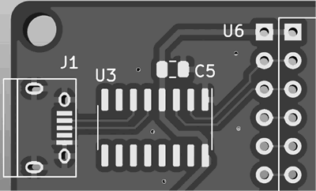
图 5 通孔焊盘（J1、U6）和表面贴装焊盘（J1、U3和C5）
图 5 通孔焊盘（J1、U6）和表面贴装焊盘（J1、U3和C5）
有的器件这两种焊盘都有。它们的形状和尺寸也是多样的，在用 CAD 工具构建元器件封装的时候，要根据该器件的数据手册中的定义来正确设定，在使用工具自带的封装或从网上下载封装的时候，一定要仔细检查，确保焊盘的大小满足器件手册里的规格要求。
3) 层
PCB 是分层（Layer）的，每一层的功能和定义不同，元器件一般是在 PCB 的顶层（Top layer或Front layer）或底层（Bottom layer或Back layer），除了连接信号的“物理”层之外，还有一些用于加工、安装以及信息指示的层，我们一般提到的单面板、双层板、4 层板等都是指的有电气连接的层数（信号、电源、地等），而 CAD 工具中的层外延更广，在用 CAD 工具设计 PCB 的时候一定要清晰理解这些层的含义和作用，正确地进行层的设置和使用。单面板和双面板的构成如图 6 所示。
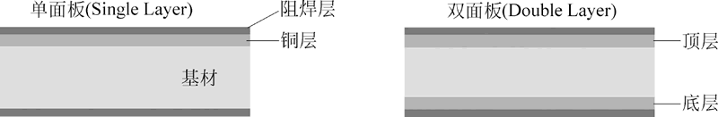
图 6 单面板和双面板的构成
图 6 单面板和双面板的构成
4) 走线
走线（Track或Trace）是 PCB 上用于器件和器件之间进行电气连接的铜线，原理图上的连线（Wire）是理想的连接：无阻抗、无电流限制、无互相之间的干扰，但在电路板上的实际走线则具有一定的阻抗（取决于走线的长度、宽度、板材、过孔等），线和线之间还会存在互相的电磁干扰等实际的问题，毕竟板上的空间是有限的，线的长度、宽度以及线和线之间的距离都是要根据板子的物理空间以及要连接的信号数量进行设定的。取决于信号的性质以及板卡上走线空间的限制，其宽窄也有所不同，例如承载大电流的走线要尽可能短而粗；成对传输信号的差分线要尽可能等长度；高速的数字信号连线其传输阻抗尽可能匹配发送器件的输出阻抗以及接收器件的输入阻抗等。
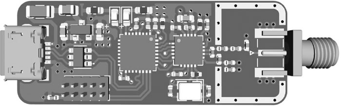
图 7 PCB板上的走线
图 7 PCB板上的走线
图 7 为国外一工程师设计的集高速数字电路、电源管理、射频电路于一体的收发模块 STRF，从这个板子的 3D 视图可以看出，不同信号走线的差异，包括数字信号走线（包括连接 USB 的差分对走线）、射频信号走线、供电走线都做了特别的处理。
5) 过孔
如果电路不能在一个层面上实现所有的信号走线，就要通过过孔（Via）的方式将信号线进行跨层连接，过孔的形式以及孔径的大小取决于信号的特性以及加工厂工艺的要求，可以将过孔类比为生活中的地下通道。根据连接信号层的设置，过孔主要分为如下三种方式，如图 8 所示。
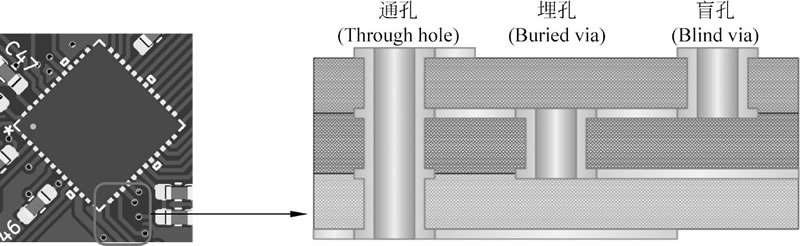
图 8 过孔及其三种方式
图 8 过孔及其三种方式
- 通孔（Through hole），连通了上下两层，上下都可见。
- 埋孔（Buried via），在电路板内部，连接电路板内部的两个层，表面上看不到。
- 盲孔（Blind via），只有一面能看到，另一面看不到，该孔将一个表面层的信号连接到内部的某个信号层。
过孔的形状和尺寸也不是随便设置的，它取决于连接信号的特性以及PCB加工厂的工艺要求。
6) 丝印
在 PCB 上丝印（Silk Screen或Overlay）被用来标记元器件的轮廓、方向、编号、备注信息以方便辨识，其名称在不同的 CAD 软件中叫法不同，例如在 Altium Designer 顶层的丝印就称为 Top overlay，底层的丝印被称为 Bottom overlay。
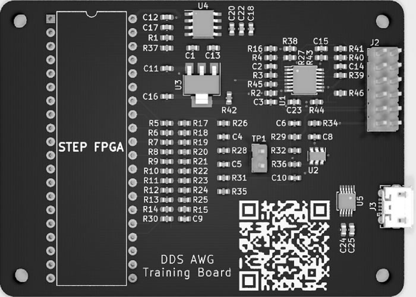
图 9 PCB上的丝印
图 9 PCB上的丝印
图 9 是我们的 DDS 任意波形发生器学习板的 3D 视图，其中用白色字符标注的元器件的编号、“DDS AWG Training Board”“STEP FPGA”文字串乃至二维码都是在丝印层上的信息。
7) 阻焊
为了防止不该连接的信号线由于种种原因导致短路，特意在 PCB 板上设置有一个阻焊（Solder Mask）层进行保护，在上下两层没有焊盘的地方上的一层用于绝缘的油层，防止焊锡将不同信号的两根连线短路。阻焊层的存在还能够防止在回流焊接、波峰焊接和手工焊接过程中导线和焊点之间的短路以及铜层的氧化，提升了板子的可靠性。用不同颜色的阻焊层也就得到不同颜色的板子，例如图 10 中同一个板子在加工的时候选择不同的阻焊层颜色，也就得到不同颜色的板子。
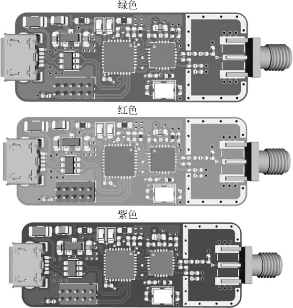
图 10 不同颜色的板子其实就是选用了不同的阻焊颜色
图 10 不同颜色的板子其实就是选用了不同的阻焊颜色
很多公司或团队特意将某一系列的板子采用某一种颜色以彰显其风格，例如 Spark Fun 的板子基本都是红色。即使是同一块板的两侧也可能使用不同颜色的阻焊方式，如 Arduino Uno 板的正面是绿色的，而背面则有一部分是白色的。
在加工快板的时候选用不同的阻焊颜色，价格和交期可能都会不同，绿色是最通用的、最快捷的，在你提交 Gerber 文件选择加工选项的时候要注意。
8) 定位孔
在很多板子上靠近四周的地方一般都会有一些内直径为 2.5~3mm 的圆形孔，被称为定位孔（Mounting Hole）。这些孔的作用有的是用来同其他板卡进行物理层叠连接固定用的，对于研发中的原型产品，即使没有其他板卡相连接，也会在四个角上打上孔，以方便调试。在不妨碍其他电气连接的前提下，四个孔可以同板上的“地”连接，调试过程中示波器探头以及其接地夹子同板上“地”的连接比较可靠，不需要再焊接接地的测试点，当然高速电路的接地点一定要靠近被测的信号。
另外在调试的时候，在四个定位孔上安装塑料或金属的螺钉，能够起到支撑的作用，放在实验台上同台面保持一定的距离，以避免台面上的导线、元器件造成板子上的信号短路。
用于同主板连接的定位孔如图 11 所示。
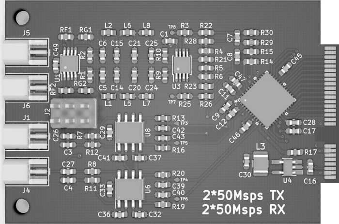
图 11 用于同主板连接的定位孔（左侧两个）
图 11 用于同主板连接的定位孔（左侧两个）
PCB的焊接过程
图 12 是工程师从方案设计到最终焊接调试的一个大致流程图：
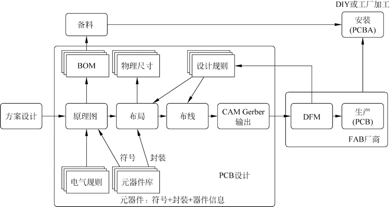
图 12 从方案设计到 PCB 焊接
图 12 从方案设计到 PCB 焊接
PCB 焊接所需要的主要工具如图 13 所示：
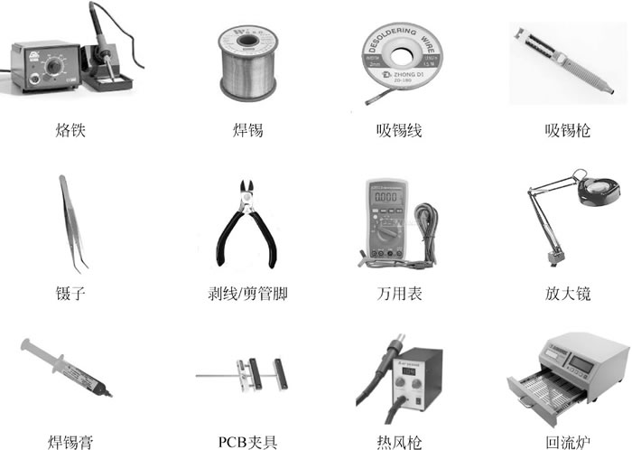
图 13 PCB焊接所需要的主要工具
图 13 PCB焊接所需要的主要工具
PCB焊接前的准备
准备工作如下：- 一块加工好的、待焊接的PCB光板。
- 要焊接到板上的元器件，根据原理图或BOM清单备齐。
- 镊子：在焊接的过程中用于夹取元器件。
- 万用表：用于测量通断、元器件的值以及二极管等的极性。
- 烙铁：最好是能够温控的。
- 焊锡丝。
- 吸锡枪。
- 放大镜：对焊接封装很小的器件以及查看焊接点的质量非常有用。
- 斜口钳/剥线钳。
- 吸锡线/吸锡枪。
- 吸锡线/吸锡枪。
- 热风枪：对于拆卸、安装表面贴装的器件很方便。
- 回流炉/焊锡膏：基于钢网进行小批量加工能提升效率并达到较好的焊接效果。
上面的图列举了一些最基本的工具，相信大家一看就知道这些工具的用途，在此不再赘述。只有右下角的热风枪、回流炉等对有些工程师来讲可能接触得少一些，但随着芯片集成度越来越高、封装日趋小型化，QFP、QFN、BGA 封装的器件被大量使用，这两个设备也逐渐成了实验室的必备工具。
除了上述的工具外，我们还需要知道将哪些器件焊接到什么位置上，因此还需要与该 PCB 相关的设计文件，细心的读者会看到 PCB 上的器件通常只标记了参考编号（例如 R1、C10 等），究竟这些参考编号代表的元器件的值是多少？是什么型号？在拿到的 PCB 上是没有相应的信息的，这是因为 PCB 上的空间有限，只能将参考编号信息印制上去（丝印），更高密度的板子连器件的参考编号也没有空间印制上去，要准确知道这些器件的型号或值，一般需要以下两种文件中的一个。
1) 原理图（Schematic）
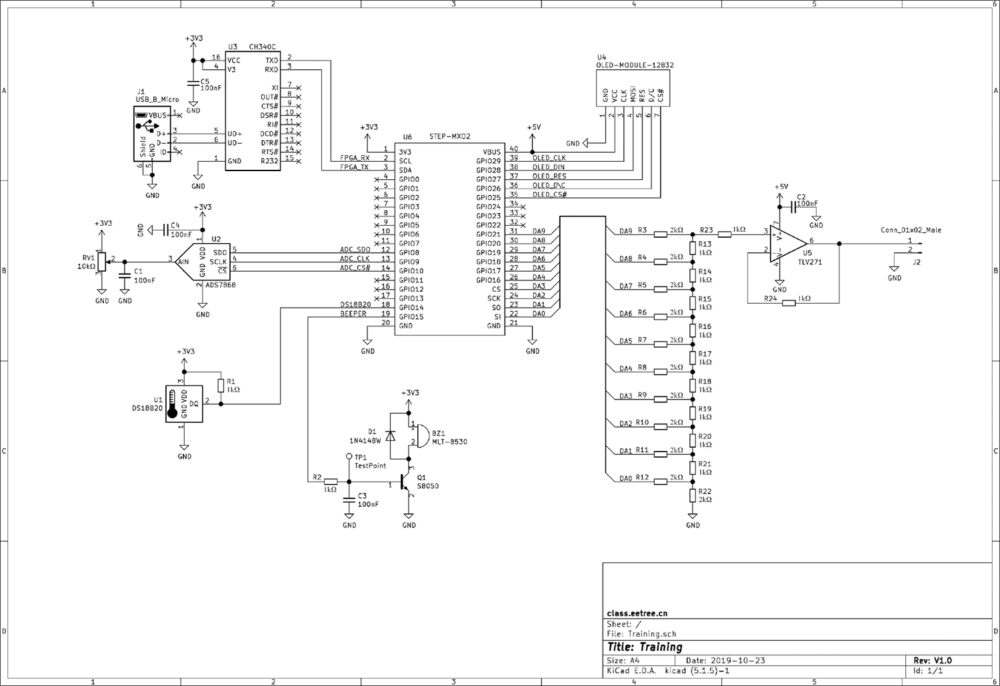
图 14 焊接板的原理图
图 14 焊接板的原理图
如图 14 所示，参阅原理图不仅可以定位PCB上每个器件的具体信息，在逐级调试的过程中，还可以根据原理图决定元器件焊接和调试的先后次序。
2) 物料（BOM）清单
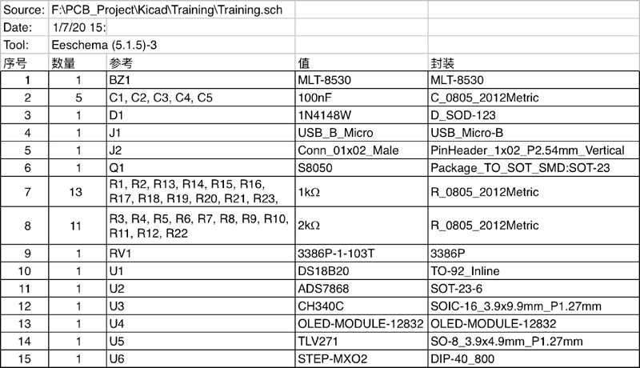
图 15 焊接训练板的BOM清单
图 15 焊接训练板的BOM清单
BOM 清单如图 15 所示，BOM 文件在 PCB 上安装元器件以及调试的时候辨别元器件时比较常用，从BOM文件中可以看出某一种值的元器件的数量，这样可以更方便地决定每种器件的数量。
PCB 的丝印图，如图 16 所示。
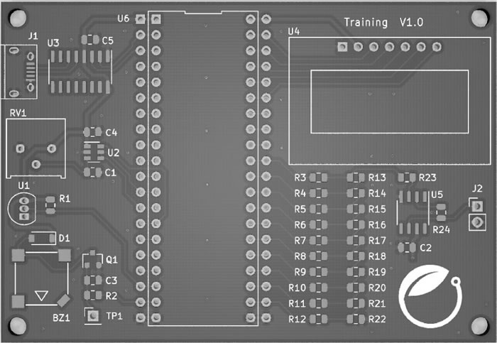
图 16 焊接板的丝印图
图 16 焊接板的丝印图
KiCad 通过插件可以生成格式为 HTML 的交互式 BOM 文件，可以在浏览器中打开，非常便捷地定位 PCB 上每一个元器件的位置、方向、编号、值等。
关注公众号「站长严长生」，在手机上阅读所有教程，随时随地都能学习。内含一款搜索神器，免费下载全网书籍和视频。

微信扫码关注公众号